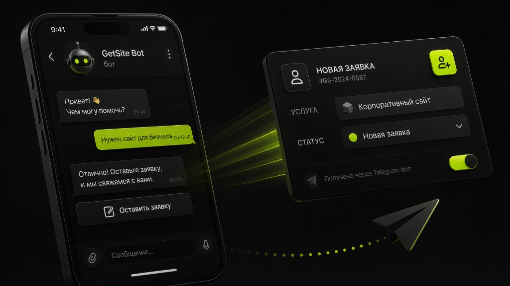

Бот — канал операций, не игрушка
Telegram в Узбекистане — рабочий инструмент: клиенты пишут туда охотнее, чем заполняют длинные формы. Поэтому Telegram-бот в 2026 году для многих компаний в Ташкенте — логичный слой между рекламой и менеджером. Вопрос не «нужен ли бот всем», а «какую операцию он забирает на себя».
Если бот просто присылает прайс PDF и всё — ценность слабая. Если собирает заявки с контекстом, пишет в CRM, отвечает на статусы и снижает нагрузку на чат — он окупается.

Задачи, где бот особенно силён
- Квалификация лида: услуга, бюджетный ориентир, срок, контакт.
- Запись на услуги и напоминания.
- Статусы заказа / обращения без ожидания оператора.
- Единый вход заявок с сайта и рекламы в один канал.
Связка «лендинг + бот» часто сильнее любого из каналов по отдельности: сайт объясняет и даёт SEO, бот ускоряет диалог и доставку в продажи.
Что нужно заложить с первого дня
- Сценарий до заявки максимум в несколько шагов.
- Понятные статусы для менеджеров.
- Аналитика: источник, шаг отказа, число завершённых заявок.
- Эскалация на человека: бот не должен бесконечно петлять.
Без эскалации люди бесятся. Без аналитики вы не поймёте, где ломается сценарий. Без статусов вернётесь к хаосу личных чатов.
Окупаемость и ожидания
Бот редко «продаёт сам». Он снижает трение и ускоряет ответ. Считайте экономию времени менеджеров и прирост доли отвеченных заявок. Если команда не отвечает быстрее — автоматизация только красиво фиксирует потери.
Когда бот не нужен (пока)
Нет процесса обработки лидов, оффер сырой, аудитории почти нет. Сначала руками отработайте 20–30 заявок, опишите частые вопросы — и только потом автоматизируйте. Иначе закодируете хаос.
Также не заменяйте ботом сайт, если вам критичны поиск, сложная презентация и бренд-история. Для многих B2B в Узбекистане база — сайт, ускоритель — Telegram.
Практичный старт
Опишите один сценарий в брифе, соберите MVP-бота, подключите уведомления и простой учёт. Через две недели посмотрите, где люди отваливаются, и усложняйте только узкие места. Так бот становится частью системы продаж, а не демо для инвестора.
Безопасность, данные и этика
В бот часто попадают телефоны и переписки по заказам. Продумайте доступы к чату менеджеров, не светите токены в публичных репозиториях, ограничьте, кто видит всю историю. Для бизнеса в Узбекистане это пока обсуждают реже, чем дизайн кнопок — зря.
Не спамьте базу агрессивными рассылками «просто напомнить о себе». Польза и частота решают, неят ли вас. Сервисные уведомления (статус, запись) воспринимаются лучше, чем витрина каждый день.
Считайте нагрузку на людей: бот генерит ожидание мгновенного ответа. Если SLA 2 часа в рабочее время — скажите об этом в боте. Иначе негатив получит бренд, а не «автоматизация».
Интеграция с сайтом и CRM должна быть двусторонне понятной: дубли заявок хуже, чем пропуск. Сверяйте источники в аналитике. UTM с рекламы в Telegram обязаны дожить до карточки лида.
Через квартал пересмотрите сценарии: устаревшие тарифы, мёртвые ветки, новые частые вопросы. Бот без редактирования контента деградирует как забытый лендинг. Владелец сценария — обязательная роль, даже если разработка разовая.
Сценарии, которые стоит автоматизировать первыми
Начните с вопроса, который команда отвечает одинаково по десять раз на дню: статус заказа, прайс на типовую услугу, запись на замер, получение контакта после рекламы. Эти ветки дают быстрый ROI. Сложный «AI-консультант обо всём» отложите — он дороже в поддержке и чаще разочаровывает.
Свяжите бота с лендингом единым оффером. Человек не должен читать разные обещания в двух каналах. Бриф общий, тексты адаптированы под формат. SEO остаётся за сайтом, скорость диалога — за ботом.
Измеряйте глубину сценария: на каком шаге отвал. Часто виновато лишнее поле или непонятная кнопка. Правки текстов в боте — такой же CRO, как на лендинге. Не стесняйтесь упрощать.
Когда бот стабилен, подумайте о полезных сервисных функциях для текущих клиентов. Это удерживает аудиторию и снижает нагрузку на людей. Но снова: один сценарий за итерацию, иначе потонете в ветках.
Ошибки запуска бота, которые дорого стоят
Слишком длинный опросник. Нет эскалации на человека. Нет владельца контента. Разный оффер с сайтом. Заявки без статусов. Обещание мгновенного ответа без дежурства. Любая из ошибок убивает доверие быстрее, чем отсутствие бота.
Ещё ошибка — автоматизировать хаос. Если менеджеры не договариваются, кто берёт лид, бот лишь ускорит потерю. Сначала правила, потом кнопки. CRM-дисциплина важнее красивого меню.
Не стесняйтесь простого MVP. Рынок Узбекистана прощает скромный бот с быстрым ответом и не прощает сложную систему, которая молчит. Скорость реакции и ясность шагов побеждают «вау-эффекты».
Пересматривайте сценарий вместе с рекламой: новые связки ключей и креативов требуют новых веток квалификации. Бот — часть маркетингового контура, а не разовый IT-заказ.
План на 30 дней после релиза бота
Дни 1–3: ежедневный контроль заявок и времени ответа. Дни 4–10: упрощение шагов с высоким отвалом. Дни 11–20: шаблоны менеджеров и статусы. Дни 21–30: решение, нужен ли лендинг/доработка SEO или усиление рекламы.
Параллельно соберите FAQ из диалогов — это золото для сайта и для следующей версии бота. Не выбрасывайте переписки. Бизнес в Ташкенте быстро учится на реальных формулировках клиентов.
Если за месяц бот не улучшил ни скорость ответа, ни порядок учёта заявок — проблема не в кнопках. Вернитесь к процессу. Автоматизация усиливает то, что уже есть: порядок или хаос.
Короткий вывод: Telegram-бот окупается, когда забирает конкретную операцию — заявку, запись, статус — и ускоряет ответ людей. Не автоматизируйте хаос, измерьте 30 дней, свяжите оффер с сайтом. Если нужен поиск и длинное доверие — добавьте лендинг. Бот силён как канал, а не как замена всей цифровой витрины.
Практический совет напоследок: зафиксируйте ответственного и дату следующего разбора цифр. Без даты улучшения растворяются в операционке. Для команд в Ташкенте короткий ритуал раз в две недели — достаточная частота, чтобы сайт, лендинг или Telegram-бот не застаивались и продолжали приносить заявки.
Практический совет напоследок: зафиксируйте ответственного и дату следующего разбора цифр. Без даты улучшения растворяются в операционке. Для команд в Ташкенте короткий ритуал раз в две недели — достаточная частота, чтобы сайт, лендинг или Telegram-бот не застаивались и продолжали приносить заявки.